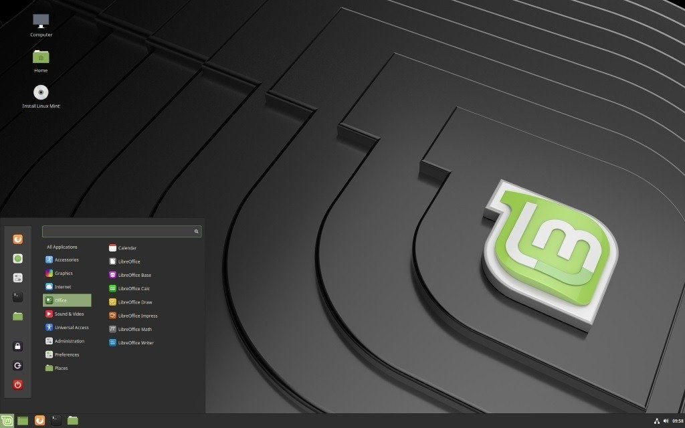
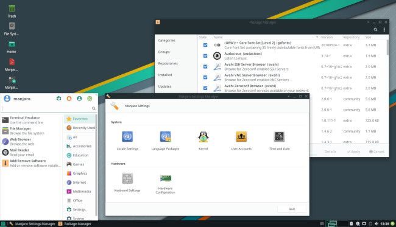
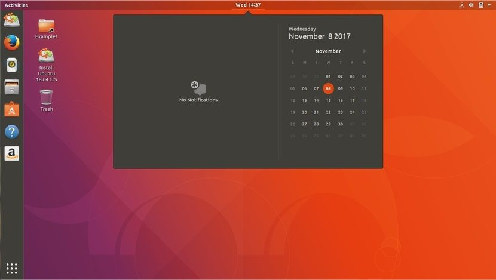

Top 3 Beginner-friendly Linux distributions you can easily install right now.
last updated January 24, 2019 in LinuxAre you fraustrated with the Windows updates, various issues and decide to try out Linux OS? But wait, which distro (distribution) or which desktop environment? I suggest you to try out Linux on your Windows machine with Virtualbox and decide yourself which distribution you suits your needs. Below are some Linux distributions from the thousands, which I believe to be the best, you can try and decide.
1: LINUX MINT
If you have never tried Linux before, Linux Mint is the first one that I would recommend, because it is very popular, comes with everything you need out of the box. It is very easy to install with just a few steps, has great hardware & multimedia support and a healthy community of excellent developers and users. Linux Mint currently ranks among the top 5 distro in Distrowatch. It is based on Ubuntu LTS which is pretty stable for day-to-day use.

- Simple learning curve if you are coming straght from Windows
- Installation process is very easy with just a few click
- Very stable and supported for a long time as it is based on Ubuntu LTS
- Comes preinstalled with all the essential tools and software out of the box
- Security issues are patched up very quickly because of its large community
- Great community support if you face any problem
Linux Mint features 3 desktop environments which are Cinnamon, Xfce and Mate. But, Cinnammon is like the flagship when it comes to Linux Mint, and this is what I recommend. You can download the ISO file (32 bit and 64 bit) from below link:
2: MANJARO
If you have ever tried or used Linux, then I would definitely recommend Manjaro which is a great distro, really popular among the Linux world and currently sits on top of Distrowatch. Even if you have never touched Linux, I would still recommend Manjaro, because it is fairly stable and very fast. The reason it is really popular because it is based on Arch Linux which is a bleeding edge operating system. The installation process of Arch Linux is not easy, but Manjaro takes all the hassles and still features all of the awesomeness of Arch Linux.

- Features a stable rolling release model
- Installation process is very intuitive
- Security issues are patched up really quickly
- Extensive configurability options
- Great hardware support and always helping community
Manjaro releases 3 different official editions of destop environment along with other community editions. But, offers Xfce as the core desktop environment. You can find the download link below:
3: UBUNTU
Ubuntu is widely used and often comes preinstalled on many non-Windows laptops (10% worldwide Ubuntu claims). It has a really stable base (Debian) and comes with everything you need out of the box. Linux Mint is based on Ubuntu because it has a great hardware and also multimedia support. It features GNOME as default desktop environment, but you can install other distros (flavours) backed by Ubuntu packages and updates.

- Features GNOME which needs some time to get used to
- Pre-loaded with all the essential applications
- Great community and help guides
- Really stable and solid, perfect for production machine
- Many flavors to try and choose
It ships with Gnome desktop environment by default, but has 7 official desktop environments/flavours, as they call it. Find the download links below:
Linux is not hard to install and use. You can install Virtualbox on your Windows machine and try installing Linux. If you like any of the above or other Linux Distribution, and do not like the monopoly of Windows, install it on your machine as your main OS. I bet you will not regret it.
Thanks for reading.